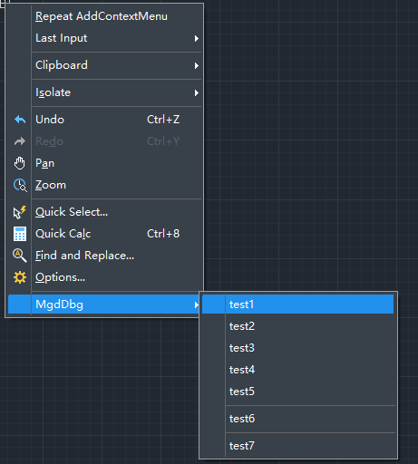

Context menus are commonly used in practical applications. This chapter explains how to add a context menu.
Preparation
First, add references to ZcWindows.dll and ZdWindows.dll in the project. Then include the following code:
using ZwSoft.ZwCAD.Windows;
Implementation Steps:
Define a ContextMenuExtension variable, add submenu items, and finally add it to the default context menu group via Application.AddDefaultContextMenuExtension.
Implement the AppContextMenu Class Library
public class AppContextMenu
{
static ContextMenuExtension m_appMenu = null;
public static void
AddContextMenu()
{
m_appMenu = new ContextMenuExtension();
m_appMenu.Title = "MgdDbg";
m_appMenu.MenuItems.Add(new AppContextMenuItem("test1", "test1"));
m_appMenu.MenuItems.Add(new AppContextMenuItem("test2", "test2"));
m_appMenu.MenuItems.Add(new AppContextMenuItem("test3", "test3"));
m_appMenu.MenuItems.Add(new AppContextMenuItem("test4", "test4"));
m_appMenu.MenuItems.Add(new AppContextMenuItem("test5", "test5"));
m_appMenu.MenuItems.Add(new MenuItem("")); // separator
m_appMenu.MenuItems.Add(new AppContextMenuItem("test6", "test6"));
m_appMenu.MenuItems.Add(new MenuItem("")); // separator
m_appMenu.MenuItems.Add(new AppContextMenuItem("test7", "test7"));
foreach (MenuItem mnuItem in m_appMenu.MenuItems)
{
AppContextMenuItem appContextMnuItem = mnuItem as AppContextMenuItem;
if (appContextMnuItem != null)
appContextMnuItem.Click += new EventHandler(ExecuteCommand);
}
Application.AddDefaultContextMenuExtension(m_appMenu);
}
Implement the AppContextMenuItem Class Library
public class AppContextMenuItem : ZwSoft.ZwCAD.Windows.MenuItem
{
private string m_cmdName;
public
AppContextMenuItem(string title, string cmdName)
: base(title)
{
m_cmdName = cmdName;
}
public string
CommandName
{
get { return m_cmdName; }
set { m_cmdName = value; }
}
}
Implement the ExecuteCommand Function
private static void
ExecuteCommand(Object o, EventArgs e)
{
AppContextMenuItem mnuItem = (AppContextMenuItem)o;
string fullCmdLine = string.Format("_{0}\n", mnuItem.CommandName);
Application.DocumentManager.MdiActiveDocument.SendStringToExecute(fullCmdLine, false, false, true);
}
Register Command to Load the Context Menu
[CommandMethod("AddContextMenu")]
static public void AddContextMenu()
{
AppContextMenu.AddContextMenu();
}
Register Command to Unload the Context Menu
[CommandMethod("RemoveContextMenu")]
static public void RemoveContextMenu()
{
AppContextMenu.RemoveContextMenu();
}
Final Effect
After executing the AddContextMenu command, right-click in the ZWCAD interface to see the newly added menu items.
